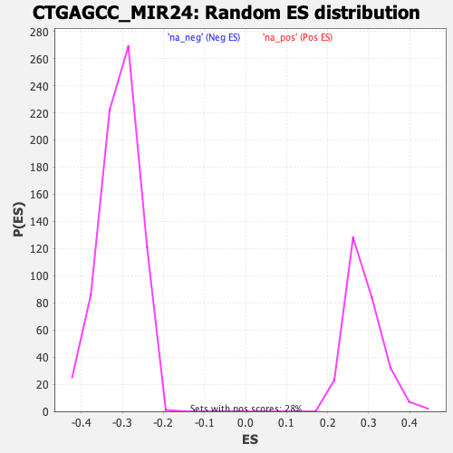

| | | Dataset | DE_genes |
| Phenotype | NoPhenotypeAvailable |
| Upregulated in class | na_neg |
| GeneSet | CTGAGCC_MIR24 |
| Enrichment Score (ES) | -0.48842832 |
| Normalized Enrichment Score (NES) | -1.5853041 |
| Nominal p-value | 0.0 |
| FDR q-value | 0.17047445 |
| FWER p-Value | 0.949 |
Table: GSEA Results Summary
 Fig 1: Enrichment plot: CTGAGCC_MIR24
Fig 1: Enrichment plot: CTGAGCC_MIR24
Profile of the Running ES Score & Positions of GeneSet Members on the Rank Ordered List
| PROBE | GENE SYMBOL | GENE_TITLE | RANK IN GENE LIST | RANK METRIC SCORE | RUNNING ES | CORE ENRICHMENT | | 1 | PIM2 | | | 367 | 2.365 | -0.0087 | No |
| 2 | G6PD | | | 432 | 2.002 | 0.0002 | No |
| 3 | SEMA4A | | | 571 | 1.536 | 0.0011 | No |
| 4 | PDGFRA | | | 680 | 1.313 | 0.0026 | No |
| 5 | HIC2 | | | 847 | 1.047 | -0.0015 | No |
| 6 | SLC12A6 | | | 987 | 0.871 | -0.0049 | No |
| 7 | YOD1 | | | 1028 | 0.822 | -0.0022 | No |
| 8 | RAP2C | | | 1062 | 0.787 | 0.0008 | No |
| 9 | KDM5C | | | 1135 | 0.733 | 0.0008 | No |
| 10 | RASGRP4 | | | 1154 | 0.716 | 0.0043 | No |
| 11 | CSK | | | 1282 | 0.623 | 0.0000 | No |
| 12 | MCHR1 | | | 1508 | 0.513 | -0.0114 | No |
| 13 | VAV1 | | | 1674 | 0.444 | -0.0193 | No |
| 14 | CCDC58 | | | 1765 | 0.403 | -0.0226 | No |
| 15 | BHLHE22 | | | 1843 | 0.373 | -0.0252 | No |
| 16 | PHF20L1 | | | 1873 | 0.362 | -0.0247 | No |
| 17 | PARP6 | | | 2071 | 0.305 | -0.0357 | No |
| 18 | AVL9 | | | 2103 | 0.297 | -0.0358 | No |
| 19 | MBOAT7 | | | 2129 | 0.289 | -0.0355 | No |
| 20 | RNF138 | | | 2152 | 0.280 | -0.0351 | No |
| 21 | KCTD21 | | | 2178 | 0.273 | -0.0350 | No |
| 22 | GPC4 | | | 2192 | 0.269 | -0.0341 | No |
| 23 | ADPRM | | | 2440 | 0.218 | -0.0489 | No |
| 24 | SNN | | | 2452 | 0.216 | -0.0482 | No |
| 25 | HNF1B | | | 2562 | 0.197 | -0.0541 | No |
| 26 | MEN1 | | | 2613 | 0.187 | -0.0561 | No |
| 27 | PLOD2 | | | 2637 | 0.184 | -0.0564 | No |
| 28 | MARCKSL1 | | | 2686 | 0.178 | -0.0584 | No |
| 29 | MNT | | | 2697 | 0.176 | -0.0579 | No |
| 30 | RAB5C | | | 2739 | 0.170 | -0.0595 | No |
| 31 | OTUD5 | | | 2905 | 0.149 | -0.0693 | No |
| 32 | SCML2 | | | 2911 | 0.148 | -0.0687 | No |
| 33 | SMAGP | | | 2982 | 0.142 | -0.0724 | No |
| 34 | CD164L2 | | | 3008 | 0.139 | -0.0731 | No |
| 35 | SP1 | | | 3083 | 0.133 | -0.0771 | No |
| 36 | C14orf180 | | | 3408 | 0.106 | -0.0976 | No |
| 37 | RAB5B | | | 3466 | 0.101 | -0.1007 | No |
| 38 | CITED4 | | | 3594 | 0.093 | -0.1084 | No |
| 39 | GRIA3 | | | 3775 | 0.083 | -0.1197 | No |
| 40 | TNFRSF19 | | | 3937 | 0.074 | -0.1297 | No |
| 41 | FAM78B | | | 4004 | 0.069 | -0.1336 | No |
| 42 | DDN | | | 4024 | 0.068 | -0.1344 | No |
| 43 | PYY2 | | | 4080 | 0.066 | -0.1376 | No |
| 44 | AMMECR1 | | | 4164 | 0.060 | -0.1426 | No |
| 45 | MMP16 | | | 4193 | 0.059 | -0.1441 | No |
| 46 | GABBR2 | | | 4414 | 0.047 | -0.1582 | No |
| 47 | KCNK2 | | | 4521 | 0.040 | -0.1649 | No |
| 48 | NEFM | | | 4608 | 0.036 | -0.1703 | No |
| 49 | BSN | | | 4960 | 0.018 | -0.1931 | No |
| 50 | SBK1 | | | 5020 | 0.015 | -0.1969 | No |
| 51 | FBXL19 | | | 5139 | 0.009 | -0.2046 | No |
| 52 | STRADB | | | 5157 | 0.008 | -0.2056 | No |
| 53 | ZXDB | | | 5194 | 0.006 | -0.2079 | No |
| 54 | HAP1 | | | 5333 | -0.001 | -0.2170 | No |
| 55 | KPNA3 | | | 5372 | -0.003 | -0.2195 | No |
| 56 | SRGAP3 | | | 5402 | -0.004 | -0.2213 | No |
| 57 | CMTM4 | | | 5453 | -0.007 | -0.2246 | No |
| 58 | PSKH1 | | | 5463 | -0.007 | -0.2251 | No |
| 59 | ABCB9 | | | 5469 | -0.008 | -0.2254 | No |
| 60 | RNF150 | | | 5495 | -0.009 | -0.2270 | No |
| 61 | TAB2 | | | 5518 | -0.010 | -0.2283 | No |
| 62 | PRKRIP1 | | | 5528 | -0.011 | -0.2289 | No |
| 63 | RASA1 | | | 5795 | -0.026 | -0.2461 | No |
| 64 | CNTFR | | | 5935 | -0.035 | -0.2550 | No |
| 65 | PPM1G | | | 5941 | -0.035 | -0.2551 | No |
| 66 | RAP1B | | | 6450 | -0.069 | -0.2879 | No |
| 67 | RNF165 | | | 6483 | -0.072 | -0.2895 | No |
| 68 | DAGLA | | | 6570 | -0.077 | -0.2947 | No |
| 69 | CCDC88B | | | 6868 | -0.100 | -0.3135 | No |
| 70 | MATR3 | | | 6890 | -0.102 | -0.3142 | No |
| 71 | TMEM161B | | | 6930 | -0.105 | -0.3161 | No |
| 72 | RNF2 | | | 6931 | -0.106 | -0.3154 | No |
| 73 | SYP | | | 6934 | -0.106 | -0.3148 | No |
| 74 | TRIM33 | | | 7058 | -0.115 | -0.3221 | No |
| 75 | CCT3 | | | 7272 | -0.134 | -0.3352 | No |
| 76 | COL11A2 | | | 7454 | -0.149 | -0.3461 | No |
| 77 | DCBLD2 | | | 7516 | -0.153 | -0.3491 | No |
| 78 | DOCK3 | | | 7628 | -0.164 | -0.3553 | No |
| 79 | ARID5B | | | 7680 | -0.169 | -0.3576 | No |
| 80 | DLGAP4 | | | 7815 | -0.180 | -0.3652 | No |
| 81 | CNOT6 | | | 7883 | -0.187 | -0.3683 | No |
| 82 | CREBL2 | | | 7954 | -0.194 | -0.3717 | No |
| 83 | EDA | | | 7987 | -0.197 | -0.3725 | No |
| 84 | ZNF217 | | | 8023 | -0.201 | -0.3735 | No |
| 85 | XPO4 | | | 8161 | -0.214 | -0.3810 | No |
| 86 | FST | | | 8194 | -0.218 | -0.3817 | No |
| 87 | S1PR1 | | | 8197 | -0.218 | -0.3804 | No |
| 88 | CLK2 | | | 8317 | -0.231 | -0.3867 | No |
| 89 | MBD6 | | | 8395 | -0.239 | -0.3902 | No |
| 90 | ZXDA | | | 8410 | -0.241 | -0.3896 | No |
| 91 | NFXL1 | | | 8454 | -0.246 | -0.3908 | No |
| 92 | EXOC5 | | | 8485 | -0.249 | -0.3911 | No |
| 93 | WDTC1 | | | 8508 | -0.252 | -0.3909 | No |
| 94 | PCDH17 | | | 8551 | -0.256 | -0.3920 | No |
| 95 | CACNB1 | | | 8662 | -0.269 | -0.3975 | No |
| 96 | TOP1 | | | 8718 | -0.276 | -0.3993 | No |
| 97 | PAK4 | | | 8724 | -0.277 | -0.3978 | No |
| 98 | STC2 | | | 8848 | -0.292 | -0.4040 | No |
| 99 | GPX3 | | | 8992 | -0.309 | -0.4113 | No |
| 100 | DENND5A | | | 9089 | -0.321 | -0.4155 | No |
| 101 | PTGER4 | | | 9166 | -0.331 | -0.4184 | No |
| 102 | PLK3 | | | 9188 | -0.334 | -0.4176 | No |
| 103 | AMOTL2 | | | 9710 | -0.406 | -0.4490 | No |
| 104 | PTPRF | | | 9717 | -0.407 | -0.4468 | No |
| 105 | RARG | | | 9817 | -0.420 | -0.4505 | No |
| 106 | REEP1 | | | 9846 | -0.424 | -0.4496 | No |
| 107 | MAPK8IP1 | | | 9850 | -0.425 | -0.4471 | No |
| 108 | FURIN | | | 9876 | -0.429 | -0.4459 | No |
| 109 | NELL2 | | | 10207 | -0.478 | -0.4644 | No |
| 110 | BCL2L11 | | | 10348 | -0.498 | -0.4703 | No |
| 111 | OGT | | | 10363 | -0.499 | -0.4680 | No |
| 112 | MIDN | | | 10427 | -0.509 | -0.4688 | No |
| 113 | SLC26A10 | | | 10441 | -0.510 | -0.4664 | No |
| 114 | RASSF2 | | | 10494 | -0.518 | -0.4664 | No |
| 115 | CDV3 | | | 10504 | -0.521 | -0.4636 | No |
| 116 | ACAN | | | 10508 | -0.521 | -0.4604 | No |
| 117 | TRPM6 | | | 10516 | -0.523 | -0.4575 | No |
| 118 | MTMR14 | | | 10549 | -0.527 | -0.4561 | No |
| 119 | APBA1 | | | 10580 | -0.534 | -0.4546 | No |
| 120 | PIM1 | | | 10598 | -0.538 | -0.4523 | No |
| 121 | TMEM9 | | | 10832 | -0.572 | -0.4638 | No |
| 122 | RNF11 | | | 10930 | -0.587 | -0.4663 | No |
| 123 | SAP130 | | | 11215 | -0.639 | -0.4808 | No |
| 124 | FGFR3 | | | 11228 | -0.642 | -0.4774 | No |
| 125 | TAF5 | | | 11294 | -0.655 | -0.4774 | No |
| 126 | CLIP2 | | | 11301 | -0.657 | -0.4735 | No |
| 127 | NEK4 | | | 11385 | -0.675 | -0.4746 | No |
| 128 | RAP1A | | | 11471 | -0.692 | -0.4756 | No |
| 129 | SMCR8 | | | 11564 | -0.712 | -0.4770 | No |
| 130 | MLEC | | | 11578 | -0.715 | -0.4732 | No |
| 131 | MOCS1 | | | 11811 | -0.764 | -0.4835 | Yes |
| 132 | STX5 | | | 11837 | -0.770 | -0.4801 | Yes |
| 133 | PURA | | | 11847 | -0.772 | -0.4757 | Yes |
| 134 | PCDH10 | | | 11955 | -0.794 | -0.4775 | Yes |
| 135 | ACBD4 | | | 11996 | -0.804 | -0.4749 | Yes |
| 136 | LYPLA2 | | | 12131 | -0.837 | -0.4782 | Yes |
| 137 | TMCC2 | | | 12144 | -0.840 | -0.4736 | Yes |
| 138 | PIP5K1B | | | 12163 | -0.845 | -0.4692 | Yes |
| 139 | TAOK1 | | | 12278 | -0.872 | -0.4710 | Yes |
| 140 | ATP13A2 | | | 12288 | -0.875 | -0.4659 | Yes |
| 141 | CDKN1B | | | 12364 | -0.892 | -0.4651 | Yes |
| 142 | INSIG1 | | | 12387 | -0.899 | -0.4606 | Yes |
| 143 | MARK4 | | | 12460 | -0.918 | -0.4594 | Yes |
| 144 | DLC1 | | | 12509 | -0.930 | -0.4565 | Yes |
| 145 | ADCY9 | | | 12554 | -0.942 | -0.4532 | Yes |
| 146 | SZT2 | | | 12568 | -0.944 | -0.4480 | Yes |
| 147 | NEK9 | | | 12573 | -0.945 | -0.4421 | Yes |
| 148 | NEDD9 | | | 12600 | -0.953 | -0.4376 | Yes |
| 149 | PTPN9 | | | 12680 | -0.974 | -0.4364 | Yes |
| 150 | IGFBP5 | | | 12691 | -0.979 | -0.4307 | Yes |
| 151 | DUSP16 | | | 12801 | -1.012 | -0.4313 | Yes |
| 152 | PTPRD | | | 12842 | -1.026 | -0.4272 | Yes |
| 153 | PSAP | | | 12873 | -1.037 | -0.4224 | Yes |
| 154 | MAGI1 | | | 12958 | -1.064 | -0.4210 | Yes |
| 155 | DNAJB12 | | | 12995 | -1.074 | -0.4164 | Yes |
| 156 | PHF23 | | | 12997 | -1.075 | -0.4095 | Yes |
| 157 | RGL2 | | | 13032 | -1.086 | -0.4046 | Yes |
| 158 | SFXN5 | | | 13036 | -1.086 | -0.3978 | Yes |
| 159 | IP6K2 | | | 13066 | -1.096 | -0.3925 | Yes |
| 160 | NAV2 | | | 13079 | -1.098 | -0.3862 | Yes |
| 161 | TOB2 | | | 13092 | -1.103 | -0.3798 | Yes |
| 162 | PLCL2 | | | 13095 | -1.104 | -0.3728 | Yes |
| 163 | SLC19A2 | | | 13193 | -1.135 | -0.3717 | Yes |
| 164 | PIGS | | | 13237 | -1.150 | -0.3671 | Yes |
| 165 | DCAF11 | | | 13247 | -1.154 | -0.3601 | Yes |
| 166 | CLUH | | | 13253 | -1.155 | -0.3530 | Yes |
| 167 | TSPAN14 | | | 13281 | -1.167 | -0.3471 | Yes |
| 168 | PHC1 | | | 13295 | -1.173 | -0.3404 | Yes |
| 169 | MAPK7 | | | 13317 | -1.180 | -0.3341 | Yes |
| 170 | ACVR1B | | | 13343 | -1.189 | -0.3280 | Yes |
| 171 | PER2 | | | 13368 | -1.202 | -0.3217 | Yes |
| 172 | DHX30 | | | 13448 | -1.231 | -0.3189 | Yes |
| 173 | AJUBA | | | 13496 | -1.251 | -0.3138 | Yes |
| 174 | VGLL3 | | | 13564 | -1.280 | -0.3099 | Yes |
| 175 | PRSS8 | | | 13630 | -1.302 | -0.3057 | Yes |
| 176 | ADAM19 | | | 13649 | -1.312 | -0.2983 | Yes |
| 177 | SP6 | | | 13706 | -1.334 | -0.2933 | Yes |
| 178 | ZER1 | | | 13763 | -1.364 | -0.2881 | Yes |
| 179 | HIP1R | | | 13768 | -1.367 | -0.2795 | Yes |
| 180 | POGZ | | | 13804 | -1.383 | -0.2728 | Yes |
| 181 | SESN1 | | | 13809 | -1.385 | -0.2641 | Yes |
| 182 | ARHGEF5 | | | 13918 | -1.433 | -0.2618 | Yes |
| 183 | KIF21B | | | 13919 | -1.434 | -0.2525 | Yes |
| 184 | INPP5B | | | 14096 | -1.531 | -0.2541 | Yes |
| 185 | GBA2 | | | 14121 | -1.549 | -0.2456 | Yes |
| 186 | ANGEL1 | | | 14122 | -1.549 | -0.2355 | Yes |
| 187 | MXI1 | | | 14201 | -1.603 | -0.2302 | Yes |
| 188 | DYRK2 | | | 14268 | -1.645 | -0.2238 | Yes |
| 189 | C8orf58 | | | 14334 | -1.679 | -0.2172 | Yes |
| 190 | ING5 | | | 14506 | -1.793 | -0.2167 | Yes |
| 191 | KLHL3 | | | 14551 | -1.831 | -0.2077 | Yes |
| 192 | RANBP10 | | | 14692 | -1.963 | -0.2041 | Yes |
| 193 | CLCN6 | | | 14770 | -2.036 | -0.1959 | Yes |
| 194 | CENPT | | | 14905 | -2.171 | -0.1906 | Yes |
| 195 | VSTM4 | | | 14907 | -2.175 | -0.1765 | Yes |
| 196 | SEMA6B | | | 14968 | -2.267 | -0.1657 | Yes |
| 197 | ZBTB44 | | | 15025 | -2.338 | -0.1541 | Yes |
| 198 | BCL2L2 | | | 15032 | -2.347 | -0.1393 | Yes |
| 199 | ATP6V0A2 | | | 15040 | -2.363 | -0.1244 | Yes |
| 200 | TRPC4AP | | | 15044 | -2.372 | -0.1091 | Yes |
| 201 | SSH2 | | | 15125 | -2.502 | -0.0981 | Yes |
| 202 | MMP14 | | | 15187 | -2.621 | -0.0850 | Yes |
| 203 | LMBR1L | | | 15372 | -3.368 | -0.0752 | Yes |
| 204 | MAFG | | | 15407 | -3.631 | -0.0538 | Yes |
| 205 | PER1 | | | 15444 | -4.204 | -0.0288 | Yes |
| 206 | NDST1 | | | 15455 | -4.695 | 0.0010 | Yes |
Table: GSEA details [plain text format]

Fig 2: CTGAGCC_MIR24: Random ES distribution
Gene set null distribution of ES for CTGAGCC_MIR24